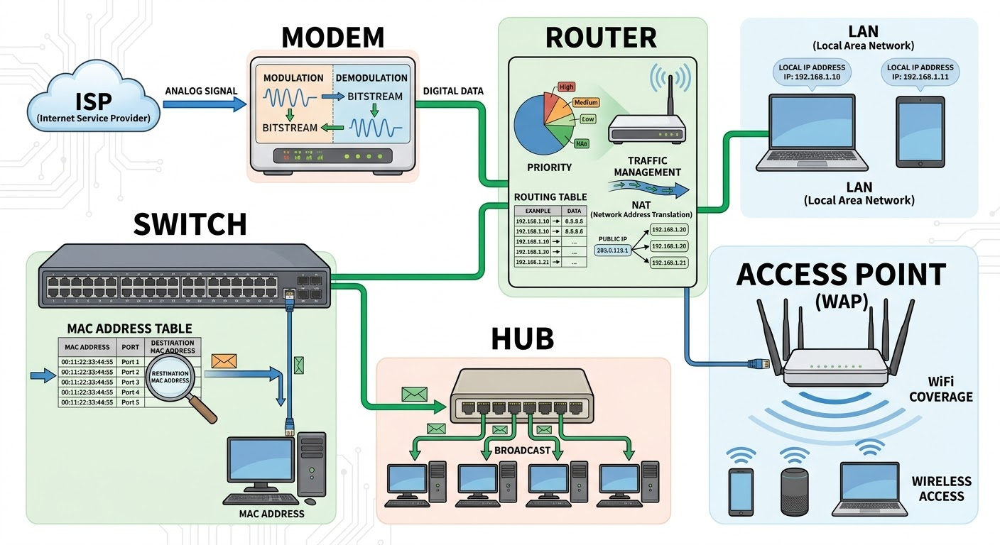

Computer Network Devices
when we talk about computer network devices, the first device we will talk about is Modem.
Modem is the device brings internet into our home. without modem there is no way to think about getting online.
Modem stands for modulator demodulator. so the name exactly describes what it does, Modulation and Demodulation
when data comes from the ISP(internet service provider), the modem demodulates it (converting analog signal to digital data)
when we send the data back out to the internet the modem modulates it (converting digital data into analog)
The Router.
this device job is managing the traffic. it receives the internet connection from the modem and shares with all our devices.
when all our device need internet the router makes it possible. it creates LAN(local area network) so it will assign local IP Address for each and keep track which device is which.
every devices can have different tasks and send or receive different packets or data. so now connect what you have learned about setting priority.
the router uses Routing tables to figure out the fastest path for data sharing. and it also uses
NAT(network address translation) so all of our devices can share one public IP address
The Switch.
It connects multiple wired devices within our network. when the computing devices we use are more than the number of router ports,
that is where Switch comes to play.
Switch has 5 to 48 Ethernet ports, after connecting it to our router then all our devices can be connected to the switch. but what makes
Switch intelligent is that is maintains MAC address table. so that it knows exactly which devices plugged to which port. when data comes in, Switch doesn't broadcast it to everyone it
looks the destination MAC address and sends the data for the correct one.
Hub.
It does similar job as Switch but the main difference is when the data comes in, it broadcast to everyone connected to the hub.
Repeater.
Repeater is the device used for regenerating signals. it allows us to connect devices together when the distance between devices are large.
The Access Point.
Wireless access point(WAP), it creates WiFi coverage from wired network connection.
the key difference from router is Access point doesn't route traffis or assign IP addresses they just provide wireless access to existing network
The Firewall.
We can call it our network security guard. it sits between our network and the internet and deciding what traffic gets in and what gets blocked.
It compares every packet againest a set of security rule so based on that Unauthorized access attempts, known malicious IP addresses, port scanning activity...
all get blocked befrore affecting our devices.
NIC(network interface card).
This is the actual hardware that physically connects our device to a network.
simply it is a translator sitting between devices and the network. every NIC has unique MAC address that's its hardware fingerprint. This is how networks identify individual devices.
See Figure-01

Figure-01